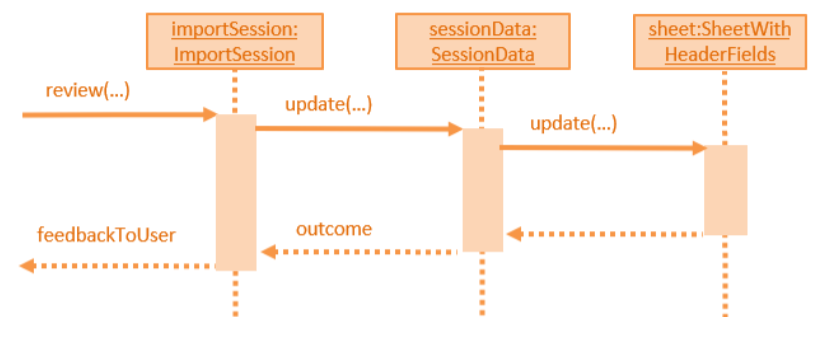

Project: CarviciM
Overview
CarviciM is a fast and robust desktop application for car servicing managers monitoring and approving large volumes of job entries. It features importing job entries from excel files, displaying job entries as eas-to-read-cards and the ability to send reminders to employees through email.
Built on the AddressBook - Level 4 project, which is used for teaching Software Engineering principles. the application uses JavaFX to create a Guided User Interface (GUI) with a Command Line Interface (CLI) as the main medium of interaction. It is written in Java, and has about 10 kLoC.
This portfolio acts as a summary of my contributions to CarviciM. It showcases the software engineering skills acquired and applied throughout the project.
Summary of contributions
-
Major enhancement: added the ability to import job entries from an excel file
-
What it does: allows the user to collate job entries from different people in the form of excel files. Also allows discrete accepting and rejecting of job entries, with autosave and a system to feedback to excel file providers.
-
Justification: A significant improvement to CarviciM by simplifying collation of job entries from different sources, which managers often do from admins, hence saving time and effort.
-
Highlights: This enhancement handles IOException thoroughly. Job entries with empty fields will inherit their empty fields from the previous entry. Column headers does not enforce strict order.
-
Credits: Apache POI and POI-ooxml library are used to support excel file handling.
-
-
Minor enhancement: added a set command that allows the user to have a customized set of keywords as an alternative to the original.
-
Code contributed: [Functional code] [Test code]
-
Other contributions:
-
Project management:
-
Helped to edit PRs for merging #40
-
-
Improving UI design
-
Documentation:
-
Community:
-
Tools:
-
Integrated 2 third party libraries (Apache POI, Apache Commons) to the project
-
-
Contributions to the User Guide
Given below are sections I contributed to the User Guide. They showcase my ability to write documentation targeting end-users. |
Changing a command word : set
To set an easy to use word in place of a default command word, use this command as follows:
Format: set OLD_COMMAND_WORD NEW_COMMAND_WORD
|
|
You don’t have to worry if you forgot your custom words! They will be displayed in the result display whenever you make a mistake!
Examples:
-
Example 1:
set adde a
Setsaddecommand word toausing default.
You will see "a has been set as an alternative for adde!" in the result display. -
Example 2:
set deletee d
set d delete
Setsdtodeleteusing default.
You will see "d has been replaced with delete!" in the result display.
Importing jobs from an excel file importAll, import, accept, reject, acceptAll, rejectAll, switch
Importing and accepting all job entries in an excel file: importAll
To import all jobs into CarviciM directly, use this command as follows:
Format: importAll FILEPATH
Similar to import command, importAll also loads an excel file,
additionally it accepts all job entries. importAll is equivalent to an
import and acceptAll.
Example:
importAll excel-file.xlsx
Imports example excel file excel-file.xlsx shown in import, accepts all job entries and saves the reviewed job entries as an external excel file.
You should see:

Importing job entries discretely import, accept, reject, acceptAll, rejectAll, switch
To discretely import job entries, here are the steps you should follow:
-
import a file
-
acceptandrejectjob entries.
Importing a new excel file: import
To start import a file, use this command as follows:
Format: import FILE_PATH
|
If your imported file does not reflect correctly, there is an old save file from the autosave feature. To rectify the problem:
|
|
|
Here is an example of an excel sheet that can be imported:
| client name | client phone | client email | vehicle number | employee name | employee phone | employee email | status | remarks | empty column | |
|---|---|---|---|---|---|---|---|---|---|---|
John Doe |
91234567 |
SXX1234X |
Jim |
87654321 |
Your remark |
Ongoing |
||||
… |
The columns can be interchanged, with empty column at the last column.
|
Example:
import excel-file.xlsx
Imports the example file excel-file.xlsx shown above. You should see:
Switching views between unreviewed jobs and jobs in CarviciM: switch
You can use this command to switch between the list of unreviewed jobs and jobs in CarviciM.
Format: switch
| You can see the current job list in the job list indicator. |
Accepting and rejecting changes
You can use 4 commands when reviewing changes:
-
accept NUMBER -
reject NUMBER -
acceptAll -
rejectAll
Accepting 1 job: accept
To accept a job with job index NUMBER in the imported list, use this command as follows:
Format: accept NUMBER
Example:
accept 1
Accepts the job entry with job index number 1 and removes it from imported list.
Accepting all remaining imported jobs: acceptAll
To accept all remaining jobs, use this command as follows:
Format: acceptAll
Example:
acceptAll
Accepts all remaining job entries and clears the imported list.
Rejecting 1 job: reject
To reject a job with job index NUMBER in the imported list, use this command as follows:
Format: reject NUMBER
Example:
reject 1
Rejects job entry with job index number 1 and removes it from imported list. It is not added to CarviciM.
Rejecting all remaining imported jobs: rejectAll
To reject all remaining jobs in the imported list, use this command as follows:
Format: rejectAll
Example:
rejectAll
Rejects all remaining job entries and clears the imported list.
Writing comments to your reviews
While accepting or rejecting changes, you can enter your comments behind the command.
|
You can type any sentence as a comment, as long as it is separated from the last argument with a spacebar character. |
Examples:
-
Example 1:
accept 1good job`
Accepts first job and attaches "good job" as a comment to the first job. -
Example 2:
acceptAll well done
Accepts all remaining imported jobs and attaches "well done" as a comment to all the remaining imported jobs. -
Example 3:
reject 1 Speak to you during tomorrow’s meeting.
Rejects first job and attaches "Speak to you during tomorrow’s meeting." as a comment to the first job. -
Example 4:
rejectAll Please check the customer details.
Rejects all remaining imported jobs and attaches "Please check the customer details." as a comment to all the remaining imported jobs.
Sharing your feedback with your employees:
To send your feedback to the job list providers, look for the save file generated after importing and reviewing your jobs.
CarviciM autosaves your comments to an excel file with -comments.xls or -comments.xlsx appended,
in the same directory.
When copying -comments.xls or -comments.xlsx files, try to keep the original copy in the folder. It helps to prevent
reimporting the same jobs from the a file with the same name twice.
|
Contributions to the Developer Guide
Given below are sections I contributed to the Developer Guide. They showcase my ability to write technical documentation and the technical depth of my contributions to the project. |
Supporting setting of command word alias feature
Current Implementation
The user can set a command word alias using the command set, specifying the old command
word and new command word. This is how set command handles user requests using currentWord
and newWord respectively.
public CommandResult executeUndoableCommand() throws CommandException {
requireNonNull(model);
try {
model.getCommandWords().setCommandWord(currentWord, newWord);
} catch (CommandWordException e) {
throw new CommandException(e.getMessage());
}
if (CommandWords.isDefaultCommandWord(currentWord)) {
return new CommandResult(getMessageDefaultSuccess());
} else if (CommandWords.isDefaultCommandWord(newWord)) {
return new CommandResult(getMessageRemoveAliasSuccess());
}
return new CommandResult(getMessageAliasSuccess());
}The command splits into 3 cases:
-
When
currentWordis a command word andnewWordis an alias,newWordwill be set as alias for command specified bycurrentWordCommandWords.isDefaultCommandWord(currentWord) -
When
newWordis a command word andcurrentWordis an alias,currentWordwill be removed and the alias for command specified bynewWordwill be resetCommandWords.isDefaultCommandWord(newWord) -
If
currentWordandnewWordare both new alias, the old alias will be replaced by the new alias.
|
The command will fail if one of the following occurs
|
set command makes use of class CommandWords to manage the custom command words.
SetCommand keeps 2 lists of command words:
-
The default command words stored as a class level reference
COMMANDS -
The command word aliases are stored as a field
commandsin the object
Both are managed by the class CommandWords.
CarvicimParser makes a reference to CommandWords to facilitate retrieval of alias command words.
However, CommandWords resides in Model (Figure 12). This is to facilitate the saving of data.
CommandWords also has a method checkIntegrity(), which ensures that object command words are 1 to 1 with class command words.
This allows forward compatibility when new command words are introduced, and old ones removed,
and protects against data corruption to some extent.
At runtime, CarvicimParser checks if the command word provided by the user matches any of the alias before proceeding parsing a command, as shown in Figure 13.
Design Considerations
Aspect: Where to put CommandWords for storage
-
Current choice: Place
CommandWordsinUserPrefs-
Pros: Single Responsibility Principle is maintained as custom command words in
CommandWordsis a user preference. CommandWords is also Serializable, which makes it compatible withJsonUserPrefsStorage. -
Cons:
CommandWordsis now coupled withUserPrefs
-
-
Alternative: Place
CommandWordsinto a separate Storage class-
Pros: Reduced coupling.
-
Cons: More files will be created in the application directory, making it more cluttered and cumbersome to backup.
-
Aspect: Access to CommandWords
-
Current choice: Create getters and setters and provide a copy of
CommandWordswhen more detail is needed.-
Pros: Easy to enforce rules on the changing of the alias in
CommandWords. -
Cons: Need to modify getters and setters to change the implementation of
CommandWords.
-
-
Alternative: Create
CommandWordslike an augmentedHashMap-
Pros: Minimal new APIs are required, and flexibility is given to classes accessing
CommandWords. -
Cons: Difficult to enforce rules, breaking the rules of mapped words can lead to bugs.
-
Aspect: Storing the list of default command words
-
Current choice: Store the default list in
CommandWords.-
Pros: Easier to maintain the Open-Closed Principle, also follows the Single Responsibility Principle.
-
Cons: Command words have to be explicitly declared under class reference to support alias
-
-
Alternative: Store the default list in
Command.-
Pros:
Commandis the super class of all commands, a method to enforce declaration of the command word can be done easily. -
Cons:
Commandis an abstract class, it is not appropriate to reference class variables.
-
Import feature
Current Implementation
session componentImportSession resides in the Session component in the Storage component as shown above. The
Session component is responsible for processing excel files, as well as keeping the state of the excel
files during runtime, in the form of SessionData.
ImportSession uses a Singleton design pattern. It is responsible for initializing and closing the session.
ImportSession has 4 methods:
-
static getInstance(): Used to retrieve the single instance ofImportSession. -
setData(sessionData): Used to setsessionDataforImportSession. -
initialize(fileName): InitializessessionDatawith and excel file located atfileName. -
closeSession(): Writes the comments as a save file to same directory of import file, with a timestamp added to the back of the filename.
ImportSession is designed to be stateless on its own, with all data stored in SessionData. This helps to
support UndoableCommand.
The flow of using ImportSession is as follows:
Loading a file into ImportSession
-
Figure 15 below shows the process of initializing ImportSession. On the
importcommand,getInstanceis used to retrieve theimportSessioninstance, before it callsinitialize(fileName). A newSheetParseris created to populatesessionDatawith excel sheet data as shown in Figure 11, which comes as:-
SheetWithHeaderField: AugmentedSheetthat provides API to indicate approval status and write comments. -
JobEntry: AugmentedJobstores the sheet number and row number for writing into the excel file.JobEntryalso contains theJobdata which will be imported upon approval.Figure 4. Sequence Diagram ofImportSessioninitialization
-
Reviewing job entries
-
Figure 16 below shows the process of reviewing job entries in an import session. On the
reviewcommand,sessionDataupdates the relevantjobEntryand retrieves the sheet and row number, which is used to updatesheetWithHeaderFields. Upon reviewing a job, CarviciM will add the job and any employees not present in the application.Figure 5. Sequence Digram ofImportSessionduring the reviewing of a job
Saving feedback from an ImportSession
SessionData autosaves the comments to an excel file with the same file name and -comments.xls or -comments.xlsx appended,
in the same directory.
Design Considerations
Aspect: Supporting UndoableCommand
-
Current choice: Save a copy of the previous instance of
sessionDatausingcreateCopy()whenever anUndoableCommandis executed, then load the previous instance on undo. Data in the copy will be written to a.tempfile, with a timestamp prepended to its name to make it unique. Most of the.tempfiles will be wiped on application exit.-
Pros:
sessionDatastores data forimportSession, making it appropriate to be used as data inundoandredo. Modification is only limited toUndoableCommand. Code forundocan be reused for any commands that affectsessionDatain the future, respecting Open Closed Principle. -
Cons: IOException still has to be handled in
sessionDataon undo.undoandredocan fail now because of IOException and they have to be modified..tempfiles can also cause home folder to bloat in size during runtime after many commands are entered.
-
-
Alternative:
importSessionprovides API toundoandredo.-
Pros:
ImportSessioncan effectively handleundoandredoon its own without additional dependencies. Open Closed Principle is respected, there is no need to modifyUndoableCommand. -
Cons: Difficult to coordinate with
UndoRedoStackas jobs and employees inmodelare also affected. IOExceptions thrown also need to be handled, requiringUndoableCommandto be modified for handling of Exceptions.
-
Aspect: Supporting mass add method addJobsAndNewEmployees
-
Current choice: Add the methods to
Model-
Pros: Cohesion is maximized, these methods can also be reused by other classes.
-
Cons: Open Closed Principle is violated and adding these methods may result in confusion on the behavior of
Model.
-
-
Alternative: Add the methods to an abstract
ReviewCommandand inherit the methods forAcceptAll/RejectAllcommands.-
Pros: The behavior of these methods can be tailored specifically to
AcceptAll/RejectAllcommands. -
Cons: Modifying the implementation of
Modelmay affect the behavior ofReviewCommandwithout knowing, leading to potential regressions.
-
Aspect: Reading of first row headers from excel files
-
Current choice: Allow compulsory and optional fields, with variable number of columns and variable order.
-
Pros: Flexible on format of imported excel files. Also allows future expansion of single column fields.
-
Cons: User may not appreciate the flexibility if he or she can enforce the format of the excel files received. Flexibility provided is not enough for unknown headers.
-
-
Alternative: Fix the format of the headers.
-
Pros: Confusion can be reduced, importing errors can also be minimized.
-
Cons: Users cannot further customize job entries on import with optional fields, optional field data will be lost.
-
Aspect: Reading of job entries from excel files
-
Current choice: Find the first complete job entry. Subsequently, whenever the next job entry is read, if there are empty fields, take those fields from the previous job entry. Missing fields will be added to remarks and comments. Repeat until there are no job entries in the file.
-
Pros: Allows excel sheet providers to save time on filling reused data between adjacent job entries.
-
Cons: Unintentional blanks may result in job entries with wrong data being imported, requiring the user to look through the remarks of the imported job entries.
-
-
Alternative: Only import complete job entries
-
Pros: Incomplete job entries will not be errorneously imported into CarviciM.
-
Cons: User will not be able to review incomplete job entries in the CarviciM as only complete jobs are imported.
-
Aspect: Uniqueness of job entries
-
Current choice: Use
jobNumberin the application on import. To prevent reimporting the same excel file twice, a file with the same name and a-comments.xlsor-comments.xlsxappended, and every subsequent import reads from this file if-
Pros: Job entry number is controlled by CarviciM and can stay unique. Job entries from excel files can also stay unique if there are no duplicates within or across excel files.
-
Cons: User might import the same file if the
-comments.xlsor-comments.xlsx gets misplaced, and become confused. The `jobNumberassociated with the same imported job might also change on every different import.
-
-
Alternative: Use a hash function to decide the
jobNumberof a job. When there is a collision, add a suffix to make thejobNumberunique.-
Pros:
jobNumberstays the same on import, independent of when it is imported. -
Cons:
JobNumberhas to be modified to support this implementation.
-